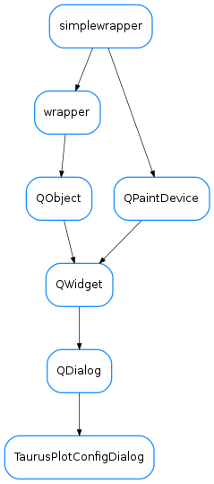

TaurusPlotConfigDialog¶

-
class
TaurusPlotConfigDialog(parent=None, flags=<PyQt4.QtCore.WindowFlags object>)[source]¶ Bases:
PyQt4.QtGui.QDialogThis class is used to build and manage the plot configuration dialog. It has been designed using the qt designer application, and then loaded to this widget. Hence, if you need to modify the dialog, you can use the TaurusPlotConfigDialog.ui file (under ui directory) to make it easier.
-
apply()[source]¶ This will apply the values set in the dialog. Note that some of them are not necessary to be set, since they’re already are set when changing the item selected
-
changeBackgroundColor()[source]¶ Launches a dialog for choosing the parent’s canvas background color
-
deltatime2str(dt, fuzzy=False)[source]¶ converts a time diff in secs to a string. If fuzzy=True it returns an approx time diff in s, min, hours or days
-
loadUi(filename=None, path=None)¶
-
modeComboChanged(itemSelected)[source]¶ This will catch the combo box selection change and will set the corresponding axis scale to the value passed as parameter
-
onChangeTitles()[source]¶ Calls The parent’s changeCurvesTitlesDialog method, with the selected curves list as the parameter
-
onCurveTitleEdited(name, newTitle)[source]¶ slot used when a curve title is edited
Parameters: - name (
QString) – curve name - name – new title
- name (
-
peaksComboChanged(itemSelected)[source]¶ This will catch the combo box selection change and will set the corresponding axis to show peaks
-
setCurvesYAxis(curvesNamesList=None, axis=None)[source]¶ calls the parent’s setCurvesYAxis method but it automatically determines the parameters if not given
-
str2deltatime(strtime)[source]¶ Translates a time string to seconds examples of valid relative times are: “now”, “NOW”, “Now”, “-1d”, “3w”, “- 3.6e3 s”,... examples of non-valid relative times:, “now + 2h”, “-5”, “3H” (unit names are case-sensitive)
-
strtime2epoch(strtime)[source]¶ Translates a str into an epoch value. It accepts “absolute” time notation as well as “relative to current time notation” (by expliciting a “+” or “-” prefix) (see str2deltatime for relative time notation).
examples of valid absolute times: “2008-3-25 14:21:59”, “25/03/08 14:21”, “03-25-2008”,...
It returns None if strtime couldn’t be interpreted
-
toggledAutoScale(toggled)[source]¶ This will catch the group boxes check/uncheck event, and will enable autoscale in case the event has been unchecking ‘disable autoscale’
-
validate()[source]¶ validates the inputs in the dialog. If validation is ok, it returns a tuple containing min/max values for each axis (None if they are autoscaled) If validation failed, it returns False.
Note
the values of the max/min boxes are already validated thanks to their attached QDoubleValidators (except for xMin/xMax in time Mode, but this case is handled by strtime2epoch)
-